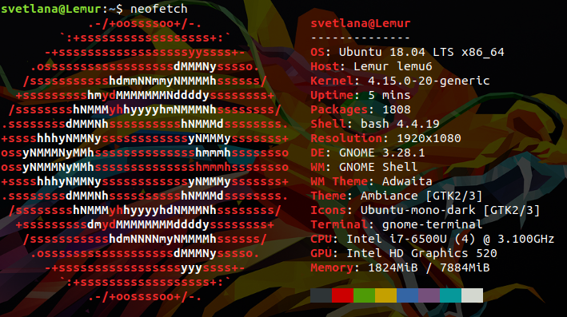
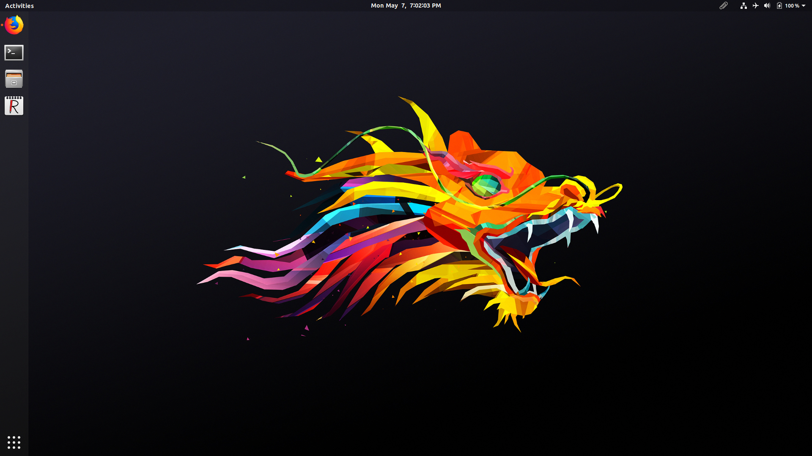

Ubuntu 18.04 LTS Review
Resisting change can be a blessing and a cruse and resisting changing to Ubuntu 18.04 LTS is a cruse. While I'm sad that I leaving Unity behind, due to some issues on 16.04 LTS, I'm glad that I decided to switch. Though I do miss Unity.
I decided to do a minimal install instead of a full one because there are many programs that I do need. I only need Firefox, PDF Reader,video player, and the core system programs. The rest of the programs that I need, including ReText and the System76 drivers, aren't included in the full install. Over the last years, I noticed that I don't use LibreOffice or the music player.
The Good
- Minimal installation option
- Calendar apps such as GNOME Calendar and Evolution are better integrated with the top panel. Though it would be cool to see To Do tasks
The Bad
- ReText is not integrated in the dock, it opens another instance on the dock, if favored.
- Nautilus doesn't have the integrated bookmarked folders in the dock when right clicked on the icon
- No recent files on the Dash of the dock (can't think of the term)
Screenshots

